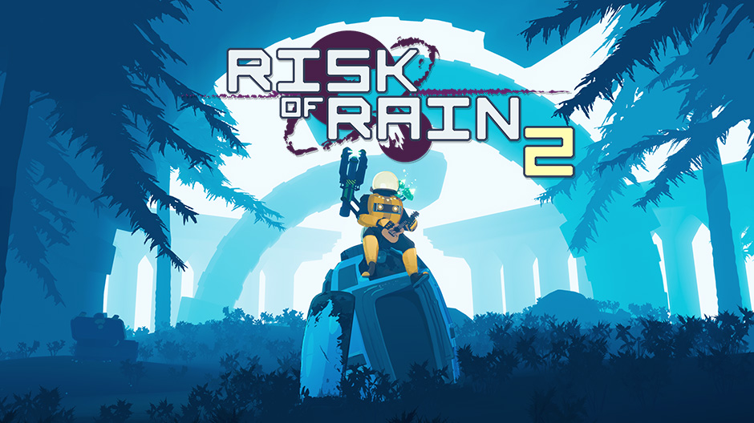

Who is He?
Chris Christodoulou is a talented composer known for his work on video game soundtracks. His most famous works include his contributions to the Risk of Rain games soundtrack, including Risk of Rain, Risk of Rain 2, and various content expansions for Risk of Rain 2. His unique style combines elements of electronic, ambient, and orchestral music. This unique style has earned him a dedicated fanbase and critical acclaim.
